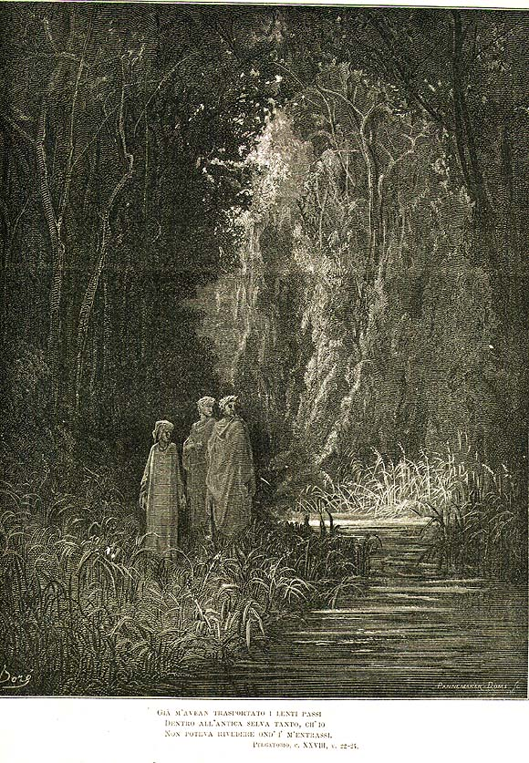

Песнь 28 из 33
Земной рай. Мательда и две реки

Кратко
Данте вступает в «божественный лес» на вершине — это вновь обретённый земной рай, Эдем. За светлым ручьём он видит прекрасную деву Мательду, собирающую цветы и поющую. Она объясняет происхождение здешнего ровного ветра и вод: тут текут две чудесные реки из единого источника — Лета, что стирает память о совершённом зле, и Эвноэ, что оживляет память о добре. А этот сад, добавляет она, и есть тот «золотой век», о котором смутно грезили древние поэты.
Главные моменты
- Вхождение в Эдемский лес — вновь обретённую невинность человечества.
- Явление Мательды среди цветов на том берегу ручья.
- Две реки: Лета (забвение зла) и Эвноэ (память о добре).
- Земной рай как исполнение поэтической мечты о золотом веке.
Значение
Возвращённая чистота человечества; приготовление к встрече с Беатриче и к обновлению памяти.